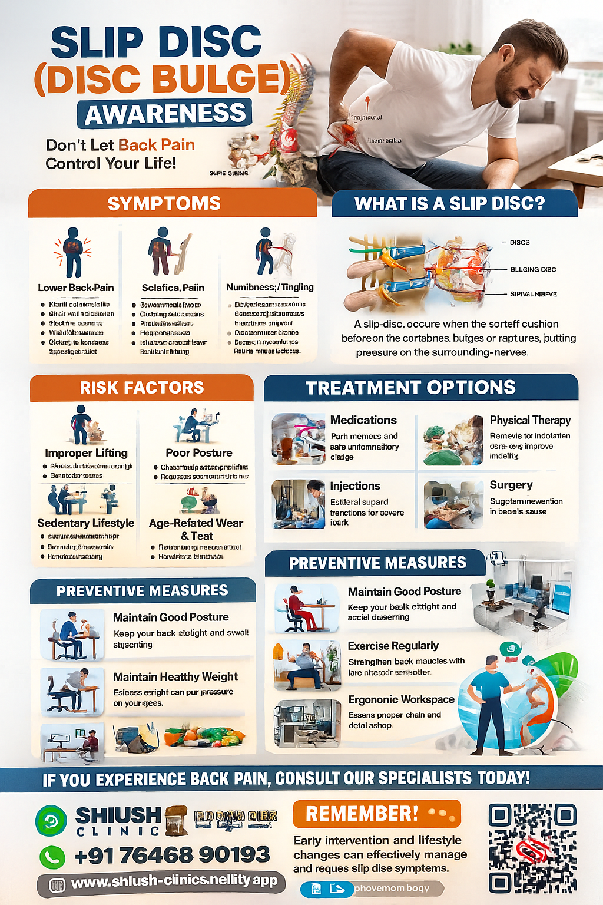
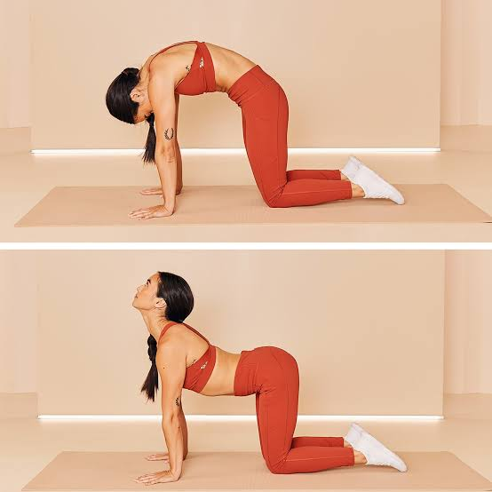
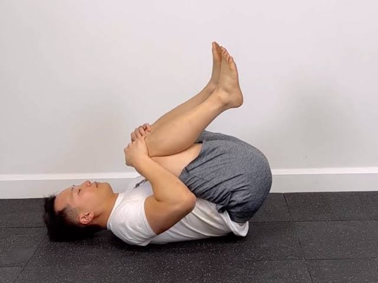

Slip Disc (Disc Bulge) Management at Shiush Clinic

What is a Slip Disc?
A slip disc occurs when one of the discs between the bones in your spine bulges out or ruptures, putting pressure on nerves.
This can lead to pain, numbness, and weakness, often in the back or legs.
Common Symptoms
- Lower back pain, especially when bending or lifting
- Pain radiating to the leg (sciatica)
- Numbness or tingling in arms or legs
- Muscle weakness
Risk Factors
- Heavy lifting or improper posture
- Obesity
- Age-related wear and tear
- Occupations requiring repetitive motions
Treatment Options
- 💊 **Medications**: Pain relievers, anti-inflammatories, muscle relaxants
- 🏃 **Physical Therapy**: Stretching and strengthening exercises
- 🔥 **Heat or Cold Therapy** to relieve pain
- 💉 **Epidural Steroid Injections** (in severe cases)
- 🩺 **Surgery**: Only if symptoms do not improve after conservative care
Recommended Exercises
These exercises help strengthen the spine and relieve pressure. Always consult a doctor before starting.

Cat-Cow Stretch

Knee to Chest
Lifestyle Modifications
- Maintain a healthy weight to reduce spine stress
- Use proper posture while sitting and standing
- Avoid lifting heavy objects alone
- Quit smoking to improve spinal disc health
- Stay active with light exercises like walking or swimming
Frequently Asked Questions
Can a slip disc heal naturally?
Yes, many slip discs improve over time with proper care, physical therapy, and lifestyle changes.
When is surgery needed?
If there is severe nerve compression causing weakness or bladder/bowel control loss, surgery may be required.
Is bed rest recommended?
Only short-term rest is advised. Gentle activity speeds up recovery.
Patient Testimonials
Ramesh P: "The exercises and physiotherapy guidance helped me avoid surgery. I am now pain-free!"
Seema T: "Excellent care and advice. I am able to return to work comfortably."
Book an Appointment